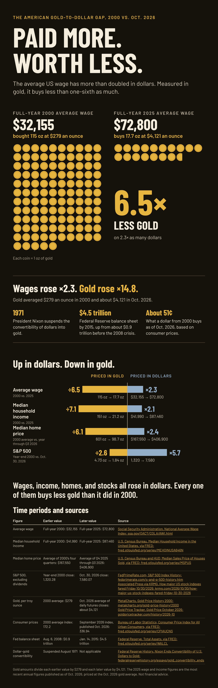

End the Fed
What American pay, homes and stocks are worth when you price them in gold instead of dollars.
Paid more. Worth less.
The average US wage more than doubled in dollars between 2000 and 2025. Priced in gold, it buys 6.5 times less.


Download the full-size infographic image to share (PNG)
Infographic sources
- Social Security Administration: National Average Wage Index
- U.S. Census Bureau via FRED: Median Household Income in the United States
- U.S. Census Bureau and HUD via FRED: Median Sales Price of Houses Sold for the United States
- FedPrimeRate.com: S&P 500 Index History, including the year-end 2000 close
- Associated Press via KRMG: How major US stock indexes fared Friday 10/30/2026
- MetalCharts: Gold Price History for 2000
- Gold Price Tracker: Gold Price October 2026, average of daily futures closes
- Bureau of Labor Statistics via FRED: Consumer Price Index for All Urban Consumers
- Federal Reserve via FRED: Total Assets of the Federal Reserve
- Federal Reserve History: Nixon Ends Convertibility of U.S. Dollars to Gold
Videos from Real Education
All of these come from the Real Education YouTube channel. Start with the first one.
How the Roman Empire Tells Us What Happens Next – And How to Be Ready
Watch “How the Roman Empire Tells Us What Happens Next” on YouTube (23:47)
The Global Economic Scam Is Ending – Here’s How It Worked
Watch “The Global Economic Scam Is Ending” on YouTube (25:57)
More from the channel
- MONEY IS FAKE (19:02)
- Keynesian Economics is a Scam – The Theory That Predicted Everything Instead (24:01)
- CBDCs – The End of Money? (18:30)
- 2028 Financial Collapse – Here’s Who Actually Gets Rich (31:54)
- 2026 Bond Market Crisis – The Housing Crash Trigger Has Been Pulled (19:11)
- 2026 Housing Peak – Why The Crash Is Coming (32:14)
- 2026 Gold Rush – Here’s Who Actually Gets Rich (And Who Gets Left Behind) (31:24)
- Three Metals Nobody’s Talking About (And Why That’s the Opportunity) (25:20)
- Is Your Private Pension Safe From a Bond Crash? What To Check Now. (13:47)
- Why Hard Work No Longer Builds Wealth (22:10)
- Why School Doesn’t Teach You About Money (17:09)